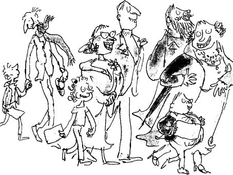
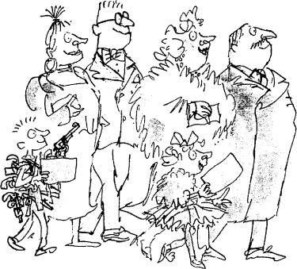

The sun was shining brightly on the morning of the big day, but the ground was still white with snow and the air was very cold.
Outside the gates of Wonka’s factory, enormous crowds of people had gathered to watch the five lucky ticket holders going in. The excitement was tremendous. It was just before ten o’clock. The crowds were pushing and shouting, and policemen with arms linked were trying to hold them back from the gates.
Right beside the gates, in a small group that was carefully shielded from the crowds by the police, stood the five famous children, together with the grown-ups who had come with them.
The tall bony figure of Grandpa Joe could be seen standing quietly among them, and beside him, holding tightly on to his hand, was little Charlie Bucket himself.
All the children, except Charlie, had both their mothers and fathers with them, and it was a good thing that they had, otherwise the whole party might have got out of hand. They were so eager to get going that their parents were having to hold them back by force to prevent them from climbing over the gates. ‘Be patient!’ cried the fathers. ‘Be still! It’s not time yet! It’s not ten o’clock!’
Behind him, Charlie Bucket could hear the shouts of the people in the crowd as they pushed and fought to get a glimpse of the famous children.
‘There’s Violet Beauregarde!’ he heard someone shouting. ‘That’s her all right! I can remember her face from the newspapers!’
‘And you know what?’ somebody else shouted back. ‘She’s still chewing that dreadful old piece of gum she’s had for three months! You look at her jaws! They’re still working on it!’
‘Who’s the big fat boy?’
‘That’s Augustus Gloop!’
‘So it is!’
‘Enormous, isn’t he!’
‘Fantastic!’
‘Who’s the kid with a picture of The Lone Ranger stencilled on his windcheater?’
‘That’s Mike Teavee! He’s the television fiend!’
‘He must be crazy! Look at all those toy pistols he’s got hanging all over him!’
‘The one I want to see is Veruca Salt!’ shouted another voice in the crowd. ‘She’s the girl whose father bought up half a million chocolate bars and then made the workers in his peanut factory unwrap every one of them until they found a Golden Ticket! He gives her anything she wants! Absolutely anything! She only has to start screaming for it and she gets it!’
‘Dreadful, isn’t it?’
‘Shocking, I call it!’
‘Which do you think is her?’
‘That one! Over there on the left! The little girl in the silver mink coat!’
‘Which one is Charlie Bucket?’
‘Charlie Bucket? He must be that skinny little shrimp standing beside the old fellow who looks like a skeleton. Very close to us. Just there! See him?’
‘Why hasn’t he got a coat on in this cold weather?’
‘Don’t ask me. Maybe he can’t afford to buy one.’
‘Goodness me! He must be freezing!’
Charlie, standing only a few paces away from the speaker, gave Grandpa Joe’s hand a squeeze, and the old man looked down at Charlie and smiled.
Somewhere in the distance, a church clock began striking ten.
Very slowly, with a loud creaking of rusty hinges, the great iron gates of the factory began to swing open.
The crowd became suddenly silent. The children stopped jumping about. All eyes were fixed upon the gates.
‘There he is!’ somebody shouted. ‘Thats him!’
And so it was!